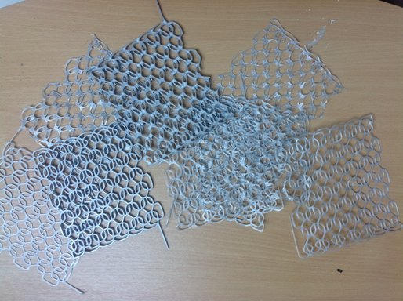

Knitting
Knitting is a fashinating technique of one thread following a path.
Technical Proces
The patterns are coded and after that saved as jpg or svg and imported in Inkscape, Inkscape is the opensource variant of Illustrator. The next step is to export a .dxf file and import this in 123D Design, a 3D modulator program that is abel to export .stl files. This file format can be import in CURA, the software of the 3D printer, that generates .gcode for this 3D printer, the Ultimaker+.
Experiments
In this project I am experimenting with 3D printers, my goal is to print some knittings very thin. For now the printer is too sloppy, when I print too thin. The construction is not solid enough, there are holes in the lines. This is because the software is constructing the form based on the borders of the thread of the knitting. So it is surrounding every hole with a loop and is not following the beautiful path of the thread.
The next step will be to generate the .gcode streight from within the code and skip all the processteps in between.
to be continued ....
Meanwhile, the knitting virus gets hold of me.!
Ultimaker Original
back to 3D-printing...
I can use the 3D-printer of the guys from www.3D-printing.com. They are my neighbours at Makerversity.
I can use their old Ultimaker Original.
Technical Specifications (The things I need to know):
- Build volume: 210x210x205
- Filement: PLA
- Filement diameter: 2,85
- Nozzle: 0.4
- Nozzle temperature: 180-260C
- Bed temperature (PLA): 70C
- Printspeed: 30-300 mm/s
- Movespeed: 30-350 mm/s
- Softare: Cura
- Basis: Blue Tape 2090
The guys of www.3dprinting.com gave me a Ultimaker Original to test with.
I'm allowed to damage te machine. But I promised them I will try to keep it in tact.
The machine didn't do anything.
A little testrun no result. It should be calibrated, that will cost you a lot of time, was the remark.
Also because I don't know anything about 3d printers.
Luckily there is internet and that gave me a lot of information, far to much, but after a whole day reading and trying I managed.
The bed of printer is callibrated, straight.
On every spot you can put 1 paper under the nozzle, not 2. T
he filament is well connected and extruding PLA.
My first testrun of my own code…
And the machine didn't break. I am so proud of my self.
I did it, that feels good. I generated my own gcode with javascript.